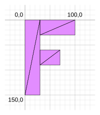

Este artículo asume que has leído el artículo sobre los fundamentos, el artículo sobre uniforms y el artículo sobre vertex-buffers. Si no los has leído, te sugiero que lo hagas primero y luego regreses.
Este artículo es el primero de una serie de artículos que esperamos te enseñen sobre matemáticas 3D. Cada uno se basa en la lección anterior, por lo que puede resultarte más fácil entenderlos leyéndolos en orden.
Vamos a comenzar con un código similar a los ejemplos de el artículo sobre vertex-buffers, pero en lugar de un montón de círculos, vamos a dibujar una sola “F” y usaremos un index buffer (buffer de índices) para mantener los datos más pequeños.
Trabajemos en el espacio de píxeles (pixel space) en lugar del espacio de recorte (clip space), igual que en la API Canvas 2D. Haremos una F y la construiremos a partir de 6 triángulos como este:

Aquí están los datos para la F:
function createFVertices() {
const vertexData = new Float32Array([
// columna izquierda
0, 0,
30, 0,
0, 150,
30, 150,
// travesaño superior
30, 0,
100, 0,
30, 30,
100, 30,
// travesaño medio
30, 60,
70, 60,
30, 90,
70, 90,
]);
const indexData = new Uint32Array([
0, 1, 2, 2, 1, 3, // columna izquierda
4, 5, 6, 6, 5, 7, // travesaño superior
8, 9, 10, 10, 9, 11, // travesaño medio
]);
return {
vertexData,
indexData,
numVertices: indexData.length,
};
}
Los datos de los vértices anteriores están en el espacio de píxeles, por lo que debemos traducirlos al espacio de recorte (clip space). Podemos hacerlo pasando la resolución al shader y realizando algunos cálculos matemáticos. Aquí se explica paso a paso:
struct Uniforms {
color: vec4f,
resolution: vec2f,
};
struct Vertex {
@location(0) position: vec2f,
};
struct VSOutput {
@builtin(position) position: vec4f,
};
@group(0) @binding(0) var<uniform> uni: Uniforms;
@vertex fn vs(vert: Vertex) -> VSOutput {
var vsOut: VSOutput;
let position = vert.position;
// convierte la posición de píxeles a un valor de 0.0 a 1.0
let zeroToOne = position / uni.resolution;
// convierte de 0 <-> 1 a 0 <-> 2
let zeroToTwo = zeroToOne * 2.0;
// convierte de 0 <-> 2 a -1 <-> +1 (espacio de recorte)
let flippedClipSpace = zeroToTwo - 1.0;
// invierte Y
let clipSpace = flippedClipSpace * vec2f(1, -1);
vsOut.position = vec4f(clipSpace, 0.0, 1.0);
return vsOut;
}
@fragment fn fs(vsOut: VSOutput) -> @location(0) vec4f {
return uni.color;
}
Puedes ver que tomamos la posición de un vértice y la dividimos por la resolución. Esto nos da un valor que va de 0 a 1 a lo largo del canvas. Luego multiplicamos por 2 para obtener un valor que va de 0 a 2. Restamos 1. Ahora nuestro valor está en el espacio de recorte, pero está invertido porque el espacio de recorte tiene el eje Y positivo hacia arriba, mientras que el canvas 2D tiene el eje Y positivo hacia abajo. Así que multiplicamos Y por -1 para invertirlo. Ahora tenemos el valor en el espacio de recorte que necesitamos, el cual podemos devolver desde el shader.
Solo tenemos un atributo, por lo que nuestro pipeline se ve así:
const pipeline = device.createRenderPipeline({
label: 'just 2d position',
layout: 'auto',
vertex: {
module,
buffers: [
{
arrayStride: (2) * 4, // (2) floats, 4 bytes cada uno
attributes: [
{shaderLocation: 0, offset: 0, format: 'float32x2'}, // position
],
},
],
},
fragment: {
module,
targets: [{ format: presentationFormat }],
},
});
Necesitamos configurar un buffer para nuestros uniforms:
// color, resolución, relleno (padding)
const uniformBufferSize = (4 + 2) * 4 + 8;
const uniformBuffer = device.createBuffer({
label: 'uniforms',
size: uniformBufferSize,
usage: GPUBufferUsage.UNIFORM | GPUBufferUsage.COPY_DST,
});
const uniformValues = new Float32Array(uniformBufferSize / 4);
// desplazamientos (offsets) a los diversos valores de uniform en índices float32
const kColorOffset = 0;
const kResolutionOffset = 4;
const colorValue = uniformValues.subarray(kColorOffset, kColorOffset + 4);
const resolutionValue = uniformValues.subarray(kResolutionOffset, kResolutionOffset + 2);
// El color no cambiará, así que configurémoslo una vez en el momento de la inicialización
colorValue.set([Math.random(), Math.random(), Math.random(), 1]);
En el momento del renderizado, necesitamos establecer la resolución:
function render() {
...
// Establecer los valores de uniform en nuestro Float32Array del lado de JavaScript
resolutionValue.set([canvas.width, canvas.height]);
// cargar los valores de uniform al uniform buffer
device.queue.writeBuffer(uniformBuffer, 0, uniformValues);
Antes de ejecutarlo, hagamos que el fondo del canvas parezca papel milimetrado. Configuraremos su escala para que cada celda de la cuadrícula del papel sea de 10x10 píxeles y cada 100x100 píxeles dibujaremos una línea más gruesa.
:root {
--bg-color: #fff;
--line-color-1: #AAA;
--line-color-2: #DDD;
}
@media (prefers-color-scheme: dark) {
:root {
--bg-color: #000;
--line-color-1: #666;
--line-color-2: #333;
}
}
canvas {
display: block; /* hace que el canvas actúe como un bloque */
width: 100%; /* hace que el canvas llene su contenedor */
height: 100%;
background-color: var(--bg-color);
background-image: linear-gradient(var(--line-color-1) 1.5px, transparent 1.5px),
linear-gradient(90deg, var(--line-color-1) 1.5px, transparent 1.5px),
linear-gradient(var(--line-color-2) 1px, transparent 1px),
linear-gradient(90deg, var(--line-color-2) 1px, transparent 1px);
background-position: -1.5px -1.5px, -1.5px -1.5px, -1px -1px, -1px -1px;
background-size: 100px 100px, 100px 100px, 10px 10px, 10px 10px;
}
El CSS anterior debería manejar tanto el caso claro como el oscuro.
Todos nuestros ejemplos hasta este punto han utilizado un canvas opaco. Para hacerlo transparente, de modo que podamos ver el fondo que acabamos de configurar, necesitamos realizar algunos cambios.
Primero, debemos establecer el alphaMode al configurar el canvas en 'premultiplied'.
Por defecto es 'opaque'.
context.configure({
device,
format: presentationFormat,
alphaMode: 'premultiplied',
});
Luego, necesitamos limpiar el canvas a 0, 0, 0, 0 en nuestro GPURenderPassDescriptor.
Como el clearValue por defecto es 0, 0, 0, 0, simplemente podemos eliminar la línea que
lo establecía en otra cosa.
const renderPassDescriptor = {
label: 'our basic canvas renderPass',
colorAttachments: [
{
// view: <- a rellenar cuando rendericemos
loadOp: 'clear',
storeOp: 'store',
},
],
};
Y con eso, aquí está nuestra F:
Observa el tamaño de la F en relación con la cuadrícula detrás de ella. Las posiciones de los vértices de los datos de la F crean una F que tiene 100 píxeles de ancho y 150 píxeles de alto, y eso coincide con lo que mostramos. La F comienza en 0,0 y se extiende a la derecha hasta 100,0 y hacia abajo hasta 0,150.
Ahora que tenemos los conceptos básicos en su lugar, añadamos traslación (translation).
La traslación es simplemente el proceso de mover las cosas, así que todo lo que necesitamos hacer es añadir la traslación a nuestros uniforms y sumarla a nuestra posición:
struct Uniforms {
color: vec4f,
resolution: vec2f,
translation: vec2f,
};
struct Vertex {
@location(0) position: vec2f,
};
struct VSOutput {
@builtin(position) position: vec4f,
};
@group(0) @binding(0) var<uniform> uni: Uniforms;
@vertex fn vs(vert: Vertex) -> VSOutput {
var vsOut: VSOutput;
// Sumar la traslación
let position = vert.position + uni.translation;
// convierte la posición de píxeles a un valor de 0.0 a 1.0
let zeroToOne = position / uni.resolution;
// convierte de 0 <-> 1 a 0 <-> 2
let zeroToTwo = zeroToOne * 2.0;
// convierte de 0 <-> 2 a -1 <-> +1 (espacio de recorte)
let flippedClipSpace = zeroToTwo - 1.0;
// invierte Y
let clipSpace = flippedClipSpace * vec2f(1, -1);
vsOut.position = vec4f(clipSpace, 0.0, 1.0);
return vsOut;
}
@fragment fn fs(vsOut: VSOutput) -> @location(0) vec4f {
return uni.color;
}
Necesitamos añadir espacio a nuestro uniform buffer:
// color, resolución, traslación
const uniformBufferSize = (4 + 2 + 2) * 4;
const uniformBuffer = device.createBuffer({
label: 'uniforms',
size: uniformBufferSize,
usage: GPUBufferUsage.UNIFORM | GPUBufferUsage.COPY_DST,
});
const uniformValues = new Float32Array(uniformBufferSize / 4);
// desplazamientos (offsets) a los diversos valores de uniform en índices float32
const kColorOffset = 0;
const kResolutionOffset = 4;
const kTranslationOffset = 6;
const colorValue = uniformValues.subarray(kColorOffset, kColorOffset + 4);
const resolutionValue = uniformValues.subarray(kResolutionOffset, kResolutionOffset + 2);
const translationValue = uniformValues.subarray(kTranslationOffset, kTranslationOffset + 2);
Y luego necesitamos establecer una traslación en el momento del renderizado:
const settings = {
translation: [0, 0],
};
function render() {
...
// Establecer los valores de uniform en nuestro Float32Array del lado de JavaScript
resolutionValue.set([canvas.width, canvas.height]);
translationValue.set(settings.translation);
// cargar los valores de uniform al uniform buffer
device.queue.writeBuffer(uniformBuffer, 0, uniformValues);
Finalmente, añadamos una interfaz de usuario para que podamos ajustar la traslación:
import GUI from '../3rdparty/muigui-0.x.module.js';
...
const settings = {
translation: [0, 0],
};
const gui = new GUI();
gui.onChange(render);
gui.add(settings.translation, '0', 0, 1000).name('translation.x');
gui.add(settings.translation, '1', 0, 1000).name('translation.y');
Y ahora hemos añadido traslación:
Observa que coincide con nuestra cuadrícula de píxeles. Si establecemos la traslación en 200,300, la F se dibuja con su vértice superior izquierdo 0,0 en la posición 200,300.
Este artículo puede haber parecido sumamente sencillo. Ya estábamos usando la traslación en varios ejemplos anteriores, aunque la llamamos ‘offset’ (desplazamiento). Este artículo forma parte de una serie. Aunque fue simple, esperamos que su propósito tenga sentido en contexto a medida que continuamos con la serie.
Lo siguiente es la rotación.
Copyright © 2023 World Wide Web Consortium. W3C® liability, trademark and permissive document license rules apply.